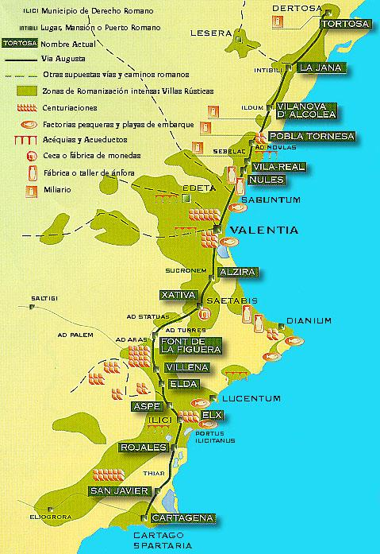

|
LA ÉPOCA ROMANA DE LA COMUNIDAD VALENCIANA
|
|
ORÍGENES Coma ya mencionamos en el especial sobre LOS IBEROS, estos mantuvieron relaciones comerciales y contacto con otras culturas de la cuenca mediterránea y una de ellas fue la romana. Esta relación hizo que los modos de vida se fuesen familiarizando con la influencia cultural que llegaba a través del contacto con estos pueblos. La política romana de asimilación fue muy hábil, no forzó las cosas, evitando así reacciones innecesarias. Fue la propia convivencia entre la población indígena y los nuevos pobladores, que llegaron con su nuevo estilo de ser y de vivir, lo que romanizó pacíficamente a la Comunitat Valenciana. Nuestra Comunitat se fue poco a poco romanizando y nuestros antepasados iberos fueron asimilando y saboreando esta nueva corriente que se acercaba a sus casas. Los asentamientos anteriores a los romanos estaban situados en cerro o sobre algún lugar elevado. Con los romanos llegó la conquista de las tierras llanas. Bien fuese por su poder económico, militar social, político....nuestros antepasados se expresaban y convivían como hispanorromanos. Se implantaron nuevos modelos de producción y habitabilidad, nacieron nuevas costumbres y cualidades en la sociedad ibera. De todos los poblados iberos quizás el más famoso sea el de Arse (Sagunto) y su defensa del tratado con los romanos y la resistencia a los cartagineses. Sagunto era aliada de Roma y fue el detonante de la II Guerra Púnica. Esta victoria romana marcó un antes y un después, sobre el dominio del Mare Nostrum. Con la romanización de los pueblos costeros los romanos se plantearon el conservar sus colonias y lazos comerciales o la conquista de la Hispania; es evidente la opción que eligieron. Los pobladores de la Comunitat no ofrecieron prácticamente residencia a la romanización. La guerra volvió a nuestra tierras con las guerras civiles romanas. Con el dominio romano vino la reorganización de la economía. Valentia fue una de las primeras ciudades hispanas de nueva planta que Roma fundó en la península, y una de las últimas en abandonar con la caída del Imperio. Los romanos intentaron hacer una pequeña Roma en nuestras tierras y junto a Ilici, antiguo poblado ibero, fueron las dos colonias de nuestra Comunitat. Colonia Valentia Edetanorum y Colonia Julia Illici Augusta. Con la muerte de Cesar y el reinado de Augusto, la paz se asienta en la península y con ella la época más fecunda, transformadora y el nacimiento de una nueva sociedad. Saboreando la Pax Romana más tiempo que el resto de provincias del imperio. Estas nuevas ciudades fueron cautivando y enamorando al resto de pueblos indígenas, que querían vivir con la misma calidad de vida. El número de latinos desplazados a la Comunitat fue pequeño como para crear un nuevo grupo social y fueron los hijos y los nietos de los iberos los que se fueron impregnado de esta nueva cultura. Conocemos ocho ciudades romanas en
nuestras tierras: Lesera, ciudad de fundación alto imperial,
identificada con el yacimiento de la Moleta dels Frares, en Forcall. Saguntum,
ciudad federada desde la II Guerra Púnica hasta que con Augusto se convirtió en municipio de ciudadanos romanos. Edeta, municipio de derecho latino, que corresponde a Llíria. Valentia,
colonia latina fundada en el año 138 a.e.c. y
nuevamente refundada con Augusto con soldados licenciados del
ejército romano, lo que explica la mención en las inscripciones de dos
ordenes:
"Valentini Veterani et Veteres" . Saetabi, municipio de derecho
latino de época de Augusto, famosa por su producción de lino, como relata Plinio. Dianium, la ciudad
romana de Dénia, que también en Plinio aparece mencionada como
estipendiaria y que después alcanzaría el rango de municipio. Lucentum, municipio romano
que se identifica con el Tossal de Manises,
de Alicante. E Ilici, la colonia romana de Elche fundada por César o
Augusto. |
|
ECONOMÍA Posiblemente la mayoría de los romanos-valencianos eran agricultores. No tenemos censos sobre este tema; pero la estructura socio-económica de este periodo tenia una base agraria. Entre los siglos I y III las tierras de la actual Comunitat, tenían una gran densidad de población dispersa en villa rusticas. Como ya hemos descrito en otros apartados de esta web, estas villas tenían una parte dedicada a la vivienda y otra al trabajo. Son el antecedente de nuestras masias. Los restos de edificaciones rurales son mas bien escasos, debido al continuo aprovechamiento de las estructuras por las distintas culturas y épocas, árabe, medieval, renacimiento... En nuestra tierra el cultivo más abundante era el cereal, seguido por la vid y el olivo. Si hablamos de huerta y árboles frutales no podemos confirmar su existencia, pero si podemos constatar la existencia de acueductos que se dirigían a zonas de cultivo y no a las ciudades o asentamientos. Esto nos hace suponer que existía una tierra de regadío dedicada a las verduras y árboles frutales. En en litoral destacaban las factorías de conservas, sobre todo en la provincia de Alicante, como Xabia, Calp, Alicante y Santa Pola. Destacamos el complejo de Xabia, importante y afamado por la producción de garum, era una zona muy rica en tonyina y estuvo en funcionamiento hasta el siglo III. En la Comunitat también habían talleres de hierro, madera, textiles y de peletería. Quizás la industria más famosa sea la cerámica, se han encontrado restos de hornos en Vall d´Uxo, Olocau, Albalat dels Tarongers, Almenara, Borriol, El Campello, ...etc.. A principio de los asentamientos se importaron gran cantidad de mercancías para abastecer las necesidades de los nuevos pobladores. Con el cambio de era la tierra valenciana comenzó a dar sus frutos y a tener excedentes que exportar a otros lugares del Imperio. En la Comunitat se han documentando unas sesenta villas rusticas. El comercio en nuestras tierras fue muy intenso, prueba de ello son los numerosos restos que han aparecido en nuestra tierra de otros lugares y viceversa, en especial de monedas. En Hispania se produjo un desabastecimiento de moneda
de bronce durante la segunda mitad del siglo I a.e.c, que
provocó que las colonias y municipios que se iban creando, acuñaran sus propias
monedas de bronce. En el área valenciana, acuñaron monedas solamente
las ciudades de Ilici (colonia) y Saguntum (municipio); pero
lo hicieron en escasa cantidad y no llegaron a cubrir las necesidades
propias de un momento de fuerte desarrollo urbanístico. Con el
reinado de Calígula, las ciudades de Hispania dejaron de emitir moneda. A
partir de este cierre, todas las provincias del Mediterráneo occidental
tendrán un sistema monetario unificado, y toda la moneda en
circulación procedería de los centros productores imperiales. A mediados
del siglo III se acelera el progresivo deterioro del sistema monetario
romano que ya no volverá a conocer la estabilidad de los siglos
anteriores. |
|
VÍAS DE COMUNICACIÓN Las calzadas posiblemente sea la transformación más importante en el sistema de comunicaciones. Sin una red de caminos estables, seguros y sólidos, no se podía haber posibilitado la romanización. Una de las características de la romanización era la capacidad de desplazamiento con la mayor brevedad, de personas y mercancías. Las primeras fueron construidas por los soldados y su finalidad era militar; pero una vez conquistado el territorio las vías pasaron a ser una necesidad civil, no olvidemos que en nuestras tierras reinaron los tiempos de paz. Conservamos numerosos vestigios y restos de calzadas que nos ayudan a identificar las vías. Además contamos con la ayuda de la toponimia y el uso continuado de las calzadas hasta pasada la Edad Media, llegando incluso a la Ilustración y la Revolución Industrial. Por ejemplo los pueblos que se denominan Llosa, indica que su municipio era atravesado por una calzada. Los denominados Albalat, que en Árabe significaba camino empedrado, quiere decir que cuando llegaron los árabes a este municipio existía un camino empedrado. Los denominados Alcantara, palabra también de origen árabe, significaba que existía un puente por donde poder cruzar. Pueblos como LLosa de Ranes o Llosa del Obispo, tenían calzadas en sus municipios, la primera se dirigía de Valencia a Xàtiva y la segunda de LLiria a Xelva. La vía principal de nuestra Comunitat era o es la Vía Augusta. Esta vía entraba por San Joan del Pas y tenia dos ramales, uno hacia la actual Andalucía entrando a la meseta por Almansa y otro ramal a la actual Cartagena. |
|
 |
También había otras vías secundarias vertebradas con la Vía Augusta, no menos importantes. En el sector norte existía un ramal paralelo que entraba por Vinaros-Santa Magdalena de Polpis-Alcala de Xivert y se acercaba a la costa por Torreblanca. En Tavernes de Valldigna se desviaba hacia la costa enlazando con Denia y otros núcleos urbanos de la Marina. Otra calzada se dirigía al interior, a Caesaraugusta, discurría paralela a la actual carretera de Morella a Zaragoza. Otra calzada era la vía del río de Sagunto, hacia Segorbe y Teruel. Otra seguía el río Turia y se dirigía de Valencia a Xelva y de aquí al norte de Cuenca. Una más seria la antigua N-III, que iba de valencia al interior pasando por Chiva, Requena, Utiel.... y de Valencia salía por el antiguo camino de Quart, este camino y la calle del mismo nombre eran una de las entradas y salidas de la Valencia romana. Cabe destacar que las calzadas eran seguras, personas y mercancías podían viajar sin miedo a robos o bandoleros. El complemento de las vías fueron los puertos. Aunque de los puertos no tenemos mucha información, ya que estos solían aprovechar espacios naturales. Recordemos algunos como el de la Albufera de Lucentum, Denia, Santa Pola, Valencia (fluvial) y se han descubierto restos que hablan de la Albufera Valenciana como eje portuario.
|